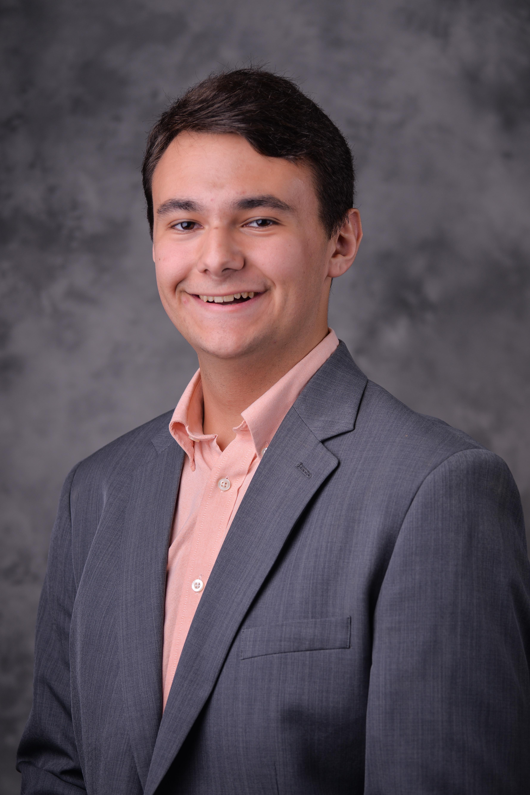
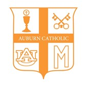
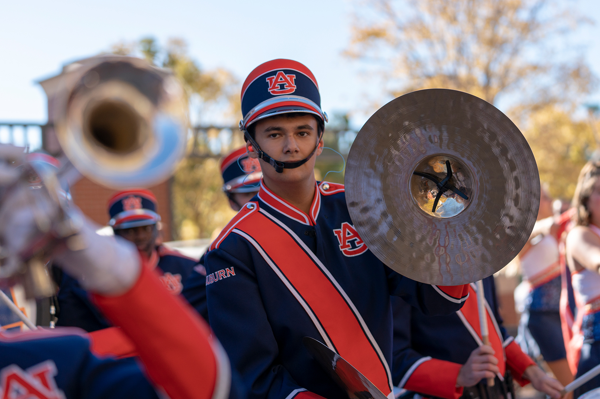
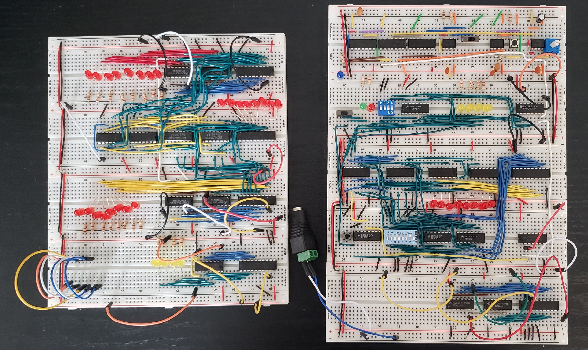

About Me
Chad Beibide
Well, my name is Chad Beibide, and welcome to my webpage! I am a student at Auburn University studying Wireless Hardware Engineering with a minor in Computer Science. I am a proud graduate of James Clemens High School '18 of Madison, AL where I was born and raised. Technology has been a passion of mine for as long as I can remember and played a large role in determining my major. Throughout high school, I had the opportunity to take several different Computer Science courses including Computer Science Principles, C, C++, and AP Java. This is when I started to discover a real passion for coding and engineering. However, as I questioned how to program, I became more and more curious about the physical machine behind it all. This drove me to look into Wireless Hardware Engineering. Wireless Engineering is foundationally Electrical Engineering with an emphasis on wireless communication and design. Paired with a 19-hour minor in Computer Science, I am better equipped to utilize my passions than ever before.
Hopefully this page lets you get to know me and what I'm about a little bit better. Do explore around and don't hesitate to reach out to me.
God Bless and War Eagle!
How I Spend My Free Time
In between class, homework, and extra-curriculars, I can commonly be found working on a side project, catching up with friends over coffee, or battling for the longest road in Catan. Living with three other engineering students also lays a healthy foundation for endless technical conversations that are known to go on for hours.
Why a Webpage?
The information that a single-page resume provides is not enough. This page provides me a way to simultaneously deliver a more in-depth story, dive into web development, and paint my colors.
Involvement
Clubs and Organizations
President | Auburn University Catholic Student Organization
I served as the President of the Catholic Student Organization during the 2020 calendar year and aided in the behind-the-scenes planning, execution, and volunteering for events that are put on for a community of 300+ members. In coming to Auburn, I knew I needed to find a strong faith community. I was active in my local youth group all four years high school and was excited to begin the next chapter. Here, I was able to find a great community to keep me accountable and challenge me to serve the Lord better through my studies, friendship, and interior life. This led me to step into a leadership role to make sure that the organization continues to operate smoothly and can be a safe place for all to enjoy and grow.
Member | Auburn University Marching Band
I have been part of a band program since I was in the 6th grade. Nine years later, I am still loving the activity. Music and band have brought me many highs, lows, awards, friends, and incredible opportunities. The first time I marched with the Auburn University Marching Band is shown at the top of this page: the 2018 Chick-Fil-A Kickoff in Mercedes Benz Stadium in Atlanta, Georgia. Aside from incredibly unique opportunities, band teaches time management, teamwork, responsibility, personal accountability, dependability, and work ethic. The skills have helped to develop healthy study habits, a drive to achieve my best, a positive and uplifting attitude, and a commitment to the community around me. I would not trade the three seasons I marched with the Auburn University Marching Band for anything!
Volunteering
Much of my volunteer work flows from my involvement in my local church. I am a Core Team member of St. Michael's CYO (Catholic Youth Organization) in Auburn, AL. Here, the core team aims to lead high schoolers as they walk in their faith, not only by educating, but through fellowship. I can truly say that being a part of this group has been one of my highest honors. Helping to equip these teens with practical insight, information, and experience has proven to be an invaluable investment. This has also taught me numerous things about myself and constantly drives me to become better each day.
Experience
Internships
4G/5G System Structure Design Intern | Samsung Electronics America
For the summer of 2021, I had the incredible opportunity to join Samsung Electronics America in their Networks division to learn about all of the innovative work that Samsung does to continue innovating the 4G/5G radio access network. During my time here, I studied and presented user equipment device log messaging exchanges and KPI performance analysis. Diving right into the telecom industry certainly provided a unique challenge through learning an endless number of acronyms, protocols, layers, and 3GPP standards. During this period, it was vital to stay organized and keep an open line of communication with the talented individuals around me. I also had the opportunity to partake in a multi-talented team of 4 other interns from across the company, to present new ideas to executives as to how the unique ecosystem that Samsung offers can better be communicated to customers, thus helping to drive sales across nearly all product categories.
Mobile Solutions Intern | Hexagon PPM
During the summer of 2020, I was fortunate to be able to remotely intern for Hexagon PPM in Madison, AL. My team was in charge of the configuration, QA, deployment, and support of mobile applications developed using an internal framework. In working with this team, I headed efforts to bring a new mobile application into the team's scope. Much of the configuration was already completed, which allowed me to push forward to prepare the product for customers. I created and executed an in-depth QA script for testing all aspects of the functionality that was specific to this new application. In doing so, many "showstopper" issues were identified. With each issue, documenting reports were filed and communicated to different development teams so that progress could continue to be made. Hexagon PPM operates under an Agile/Scrum methodology. With daily stand-ups and an up-to-date backlog and task board of items, tasks were able to be systematically carried out. Throughout my internship, I was responsible for communicating across several different teams located around the world to work towards resolving issues. In doing so, I refined my abilities in effective cross-functional communication.
Mobile Application Developer | Madison City Schools
During my senior year of high school, I interned with the Madison City Schools Central Office. Due to my background in programming, I was excited utilize these skills in a professional setting. Here, I re-developed the Madison City Schools mobile application, MCS GO. This involved a full re-write of the existing limited functionality app. I was tasked to redesign and bring new features such as push notifications, a curriculum catalog, and enhanced navigation. This was entirely self-led as there was nobody in the office with app development experience. Throughout the 7 months that I worked on this project, I taught myself development tools such as Xcode, Android Studio, Swift, Kotlin, SQL, Google Firebase, and much more. It was not rare that I would be staying extra hours at the office or working from home. Every new piece was a new avenue to explore and more research for me to do. Extensive troubleshooting was carried out after countless errors. Shoutout to Stack Overflow on this one, couldn't have done it without you!
Projects
Hardware
Ongoing | 8-bit Breadboard Computer
This one has been a LOT of fun. This project springs from a well-known YouTuber, Ben Eater. He supplies part kits and tutorials, explaining every connection along the way. I began this project during the summer of 2020 after I completed a Computer Systems course. This project takes me deeper into the digital logic architecture of computers, along with invaluable troubleshooting and logical thinking experience. I currently have constructed the ALU, a-register, b-register, and clock module. There are several components left to tackle, such as the program counter, completion of the RAM module, control logic, and readout displays. This build is meant to be as transparent as possible. Each module has LED readouts that dynamically display the contents in BCD format. This helps greatly in troubleshooting connections and as a tool in understanding the transfer of data in every calculation. When done, the unit will be a full programmable 8-bit computer.
Raspberry PI Parking Sensor
This was among my first electronics projects. Completed in 2018 and winning First Place in the regional ACTE Technology fair, I learned a lot from it. From interfacing with I/O devices and pins to writing python scripts, this project incorporated many exciting aspects of engineering and design. The idea started simple and quickly became larger and larger as I learned the capabilities that the Raspberry Pi had to offer. When all was said and done, the finished product included an ultrasonic distance sensor, multi-color LED lighting strip, and LED matrix display. As a high schooler at the time, this project was entirely self-taught. Research into MOSFETs, LED voltage ratings, and existing libraries all slowly began to come together with some jumper wires and a breadboard. I will never forget the first time that I was able to activate the LED strip. After hours of troubleshooting code and wiring, the strip came to life in the early hours of the morning. The rest was history.
Software
You're Looking At It!
Surprise! This website has been a lot of fun in of itself in creating! Everything that you see here is 100% researched, designed, and created by me (aside from a few libraries). HTML and CSS have a special little place in my coding history. They were among the first languages I began learning when I stumbled across Codeademy in middle school. I still have relatively low experience in these fields but this project was largely carried out because I was determined to create something using this foreign format. All of the necessary information is out there, I just needed to sit down and learn it. Then all of a sudden... I have a website! Creating the original layout and figuring out the color scheme were largely among the hardest parts. In order to get specific functionality such as the navigation bar, and the floating action button, I decided to use JavaScript. After looking into this a little deeper I technically settled primarily with JQuery. With my background in many other languages, the actual coding of it was not difficult to pick up at all, and I look forward to supporting other projects that I begin in the future with some form of networking capabilities!